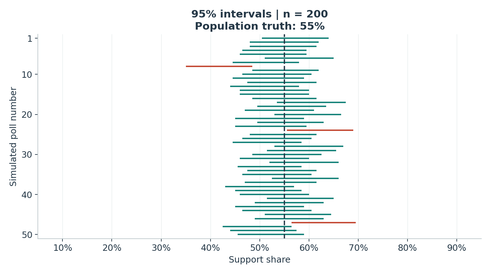

Actual coverage
Intervals covering 55%
Mean width, percentage points
━━ Covers 55%━━ Misses 55%Dashed line: fixed population truth.

All data are simulated. The plot shows the first 50 polls in generation order, with no selection. Coverage and mean width use all 5,000 fresh polls; each interval uses 2,000 bootstrap resamples. Settings display precomputed experiments, so results do not change randomly when a control is clicked.